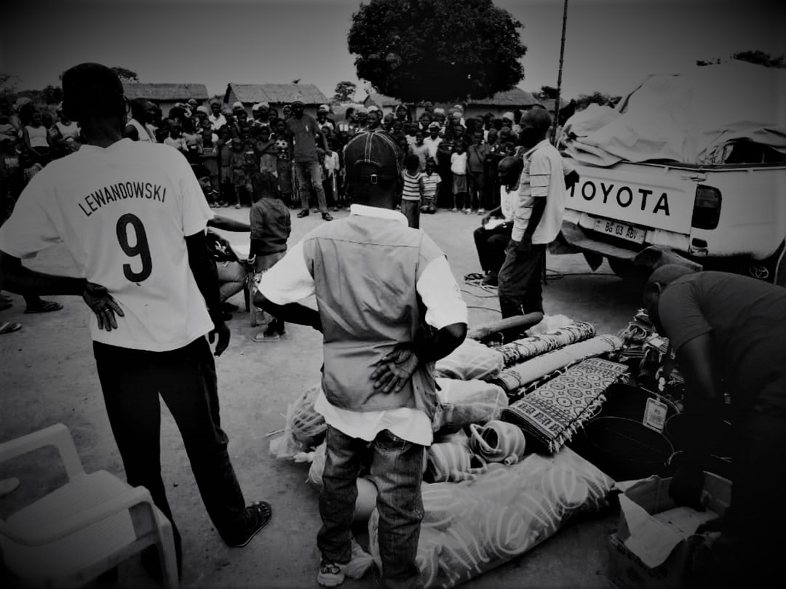

We strive to ensure children are protected from violence,, abuse and exploitation during humanitarian crises
Our action in education are focused on the improving of the educational contents and teaching methods.
We populate more efficient methods and technologies for sustainable agriculture
We strive to insure the access to safe drinking water and sanitation facilities
In last decade 20 million of girls and boys have been forced to flee their homes because of an emergency and more than 1 million children have been orphaned or separated from their families by an emergency.
One billion or more children live in countries or territories affected by armed conflicts.
Several thousands of children have been coerced or induced into armed forces and groups to serve as child soldiers or associated with armed forces and groups.
Over 175 million of children are likely to be affected every years by emergencies.
Rape and other forms of sexual violence and were cited as being used as a war tactic in 16 countries and territories from 2000 to 2007.
In 2019, around 33 million children were living outside of their country of birth. In total, at the end of 2018 over 31 million children were living in forced displacement due to violence and conflict within their own country or abroad. Worldwide, more than 33 million children have been forcibly displaced at the end of 2020;
1 in 3 people in the world do not have access to safe drinking water. As a result, more than 3.4 million people die from waterborne diseases;
Around more than 801,000 children younger than 5 years of age, mostly in developing countries, die from diarrhea every year.
785 million people lack even a basic drinking-water service, including 144 million people who are dependent on surface water.
Globally, at least 2 billion people use a drinking water source contaminated with faeces.
In least developed countries, 22% of health care facilities have no water service, 21% no sanitation service, and 22% no waste management service;
206 million people with limited services, or an improved water source requiring more than 30 minutes to collect water
435 million people taking water from unprotected wells and springs
144 million people collecting untreated surface water from lakes, ponds, rivers and streams.
Some 829 000 people are estimated to die each year from diarrhoea as a result of unsafe drinking-water, sanitation, and hand hygiene.
By next year, nearly 14 million more children are likely to be severely malnourished because of the pandemic’s impacts.
Nearly half of all deaths in children under 5 are attributable to undernutrition but the face of malnutrition, in all its forms, is rapidly changing, with childhood overweight an escalating epidemic of global proportions.
More than 1 billion children are at risk of falling behind due to school closures aimed at containing the spread of COVID-19.
Nearly one-tenth of the world population – up to 811 million people went hungry in 2020. It is projected that around 660 million people may still face hunger in 2030.
The climate change could have the greatest impact on child mortality by shifting disease environments, causing greater food insecurity and threatening water and sanitation services.
.